空间转录组NMF降维分群
原文：https://mp.weixin.qq.com/s?__biz=MzAwMzIzOTk5OQ==&mid=2247534790&idx=1&sn=f2a13496723cdee5dd2430e46c895e18&chksm=9b3c3196ac4bb88061ab42ba5155df945bd6472aaa8b69421d4ab98626d3a59ca080d025ff78#rd 合集：空间转录组
一、写在前面
非负矩阵分解(NMF)
非负矩阵分解是一种降维技术，它将一个矩阵 V 分解为两个非负矩阵 W 和 H：
V≈W×H
-
输入矩阵 V（基因×Spot）：行是基因，列是空间位置（spot）的表达量。
-
“成分”矩阵（W和H）： 分解后得到的矩阵含义如下：
· W 矩阵（基因×因子）：每一列代表一个基因表达模式（gene program 或 metaprogram），即一组协同表达的基因签名。这些模式往往对应生物学功能模块（如免疫响应、代谢通路、细胞周期等），具有极强的可解释性。
· H 矩阵（因子×Spot）：每一行表示某个基因表达模式在组织不同位置（spot）的激活强度或权重，可直接映射回空间坐标，形成连续的空间因子图，用于识别组织分区、肿瘤微环境或功能域。
NMF 的非负约束确保分解结果具有良好的生物学可解释性：组织中的基因表达仅通过这些模式的加性组合来重构，符合实际的转录调控机制。这种“部分-based”的表示方式，使其特别适合发现空间异质性中的潜在基因表达模式。
注意： 在另一种常见应用（如去卷积后的二级分析）中，NMF可应用于Spot×细胞类型的比例矩阵，此时H矩阵会对应细胞类型组合（niche），W对应空间激活。但直接在表达矩阵上运行NMF时，确实首先生成的是基因表达模式（W矩阵）。
这部分可以参考我们空转课程三种方法教你搞定空转数据邻域分析：squidpy+stSME+NMF分解
学习手册与测试文件下载见文末
更多空转教程可见：
69h空转视频！从 “零基础”到“复现《Nature Genetics》代码”
学前tips:
本教程基于Linux环境的Rstudio演示，计算资源不足的同学可参考：
访问链接：https://biomamba.xiyoucloud.net/
欢迎联系客服微信[Biomamba_zhushou]获取帮助
如果需要单细胞数据分析教学、生信热点全文复现、自测数据个性化分析辅导、常态化实验学习，欢迎联系客服微信[Biomamba_zhushou]。
二、实操流程
如果你对下面的教程比较迷茫，那么你可以先行学习编程教程：
1. 降维分析方法（PCA vs NMF）
主成分分析（Principal Component Analysis, PCA）和非负矩阵分解（Non-negative Matrix Factorization, NMF）都是常用的无监督降维方法，在空间转录组学（ST）中均可用于因子/模式发现。但由于核心原理不同，二者在表示方式、可解释性、适用场景等方面存在显著差异。
核心差异对比
| 维度 | PCA | NMF |
|---|---|---|
| 约束条件 | 无符号约束，基向量和系数可正可负 | 严格非负约束（W ≥ 0, H ≥ 0） |
| 表示方式 | 整体表示（holistic representation） | 部分表示（parts-based representation） |
| 基向量含义 | 主成分（eigenvectors），全局变异方向，往往是“完整”或双极性模式（正负偏移） | 局部特征，仅加性组合 |
| 可解释性 | 数学意义强（最大方差），生物学解释较难 | 生物学解释性强，符合基因表达的加性调控机制 |
| 对非负数据 | 不天然适合，可能产生负值加载 | 天然适合计数/表达数据，无负值干扰 |
| 解的唯一性 | 唯一（特征值分解） | 非唯一（依赖初始化），需多次运行取稳定结果 |
在 ST 数据（基因 × Spot 矩阵）上直接应用时：
-
PCA （如 Seurat 默认降维）：
-
捕捉全局变异最大方向，常用于初步降维和聚类。
-
得到的 PC（主成分）加载可正可负，难以直接解释为“基因程序”。
-
空间映射时可能出现振荡或负激活，不符合表达强度非负的生物现实。
-
-
NMF （如 NSF、Giotto 等工具）：
-
直接产生非负的基因表达模式 （W 矩阵列），每列为一组协同上调基因，常对应明确生物功能（如免疫激活、缺氧响应）。
-
空间因子（H 矩阵行）为纯加性权重，更易形成平滑、连续的空间域。
-
2. NMF 实操(单样本)
这里我们用常用的 Visium v1的乳腺癌组织切片数据集
# 加载R包
rm(list=ls())
# install.packages("GeneNMF")
library(GeneNMF)
library(Seurat)
## Loading required package: SeuratObject
## Loading required package: sp
## 'SeuratObject' was built with package 'Matrix' 1.7.1 but the current
## version is 1.7.2; it is recomended that you reinstall 'SeuratObject' as
## the ABI for 'Matrix' may have changed
##
## Attaching package: 'SeuratObject'
## The following objects are masked from 'package:base':
##
## intersect, t
library(ggplot2)
library(patchwork)
library(dplyr)
##
## Attaching package: 'dplyr'
## The following objects are masked from 'package:stats':
##
## filter, lag
## The following objects are masked from 'package:base':
##
## intersect, setdiff, setequal, union
# 加载数据(乳腺癌样本数据)
sdata <-Load10X_Spatial(
data.dir ="./data/single/",
filename ="filtered_feature_bc_matrix.h5",
assay ="Spatial",
)
先查看一下数据结构
str(sdata)
## Formal class 'Seurat' [package "SeuratObject"] with 13 slots
## ..@ assays :List of 1
## .. ..$ Spatial:Formal class 'Assay5' [package "SeuratObject"] with 8 slots
## .. .. .. ..@ layers :List of 1
## .. .. .. .. ..$ counts:Formal class 'dgCMatrix' [package "Matrix"] with 6 slots
## .. .. .. .. .. .. ..@ i : int [1:19308699] 21 26 27 32 37 38 39 48 51 52 ...
## .. .. .. .. .. .. ..@ p : int [1:3814] 0 3893 12224 14139 19407 27530 34247 39887 48559 55480 ...
## .. .. .. .. .. .. ..@ Dim : int [1:2] 33538 3813
## .. .. .. .. .. .. ..@ Dimnames:List of 2
## .. .. .. .. .. .. .. ..$ : NULL
## .. .. .. .. .. .. .. ..$ : NULL
## .. .. .. .. .. .. ..@ x : num [1:19308699] 1 3 20 1 1 1 7 1 1 4 ...
## .. .. .. .. .. .. ..@ factors : list()
## .. .. .. ..@ cells :Formal class 'LogMap' [package "SeuratObject"] with 1 slot
## .. .. .. .. .. ..@ .Data: logi [1:3813, 1] TRUE TRUE TRUE TRUE TRUE TRUE ...
## .. .. .. .. .. .. ..- attr(*, "dimnames")=List of 2
## .. .. .. .. .. .. .. ..$ : chr [1:3813] "AAACAAGTATCTCCCA-1" "AAACACCAATAACTGC-1" "AAACAGAGCGACTCCT-1" "AAACAGGGTCTATATT-1" ...
## .. .. .. .. .. .. .. ..$ : chr "counts"
## .. .. .. .. .. ..$ dim : int [1:2] 3813 1
## .. .. .. .. .. ..$ dimnames:List of 2
## .. .. .. .. .. .. ..$ : chr [1:3813] "AAACAAGTATCTCCCA-1" "AAACACCAATAACTGC-1" "AAACAGAGCGACTCCT-1" "AAACAGGGTCTATATT-1" ...
## .. .. .. .. .. .. ..$ : chr "counts"
## .. .. .. ..@ features :Formal class 'LogMap' [package "SeuratObject"] with 1 slot
## .. .. .. .. .. ..@ .Data: logi [1:33538, 1] TRUE TRUE TRUE TRUE TRUE TRUE ...
## .. .. .. .. .. .. ..- attr(*, "dimnames")=List of 2
## .. .. .. .. .. .. .. ..$ : chr [1:33538] "MIR1302-2HG" "FAM138A" "OR4F5" "AL627309.1" ...
## .. .. .. .. .. .. .. ..$ : chr "counts"
## .. .. .. .. .. ..$ dim : int [1:2] 33538 1
## .. .. .. .. .. ..$ dimnames:List of 2
## .. .. .. .. .. .. ..$ : chr [1:33538] "MIR1302-2HG" "FAM138A" "OR4F5" "AL627309.1" ...
## .. .. .. .. .. .. ..$ : chr "counts"
## .. .. .. ..@ default : int 1
## .. .. .. ..@ assay.orig: chr(0)
## .. .. .. ..@ meta.data :'data.frame': 33538 obs. of 0 variables
## .. .. .. ..@ misc :List of 1
## .. .. .. .. ..$ calcN: logi TRUE
## .. .. .. ..@ key : chr "spatial_"
## ..@ meta.data :'data.frame': 3813 obs. of 3 variables:
## .. ..$ orig.ident : chr [1:3813] "SeuratProject" "SeuratProject" "SeuratProject" "SeuratProject" ...
## .. ..$ nCount_Spatial : num [1:3813] 10073 47039 3232 19775 45255 ...
## .. ..$ nFeature_Spatial: int [1:3813] 3893 8331 1915 5268 8123 6717 5640 8672 6921 5052 ...
## ..@ active.assay: chr "Spatial"
## ..@ active.ident: Factor w/ 1 level "SeuratProject": 1 1 1 1 1 1 1 1 1 1 ...
## .. ..- attr(*, "names")= chr [1:3813] "AAACAAGTATCTCCCA-1" "AAACACCAATAACTGC-1" "AAACAGAGCGACTCCT-1" "AAACAGGGTCTATATT-1" ...
## ..@ graphs : list()
## ..@ neighbors : list()
## ..@ reductions : list()
## ..@ images :List of 1
## .. ..$ slice1:Formal class 'VisiumV2' [package "Seurat"] with 6 slots
## .. .. .. ..@ image : num [1:600, 1:600, 1:3] 0.749 0.745 0.749 0.745 0.741 ...
## .. .. .. ..@ scale.factors:List of 4
## .. .. .. .. ..$ spot : num 177
## .. .. .. .. ..$ fiducial: num 287
## .. .. .. .. ..$ hires : num 0.0825
## .. .. .. .. ..$ lowres : num 0.0248
## .. .. .. .. ..- attr(*, "class")= chr "scalefactors"
## .. .. .. ..@ molecules : list()
## .. .. .. ..@ boundaries :List of 1
## .. .. .. .. ..$ centroids:Formal class 'Centroids' [package "SeuratObject"] with 7 slots
## .. .. .. .. .. .. ..@ cells : chr [1:3813] "AAACAAGTATCTCCCA-1" "AAACACCAATAACTGC-1" "AAACAGAGCGACTCCT-1" "AAACAGGGTCTATATT-1" ...
## .. .. .. .. .. .. ..@ nsides : int 0
## .. .. .. .. .. .. ..@ radius : num 177
## .. .. .. .. .. .. ..@ theta : num 0
## .. .. .. .. .. .. ..@ coords : num [1:3813, 1:2] 15937 18054 7383 15202 21386 ...
## .. .. .. .. .. .. .. ..- attr(*, "dimnames")=List of 2
## .. .. .. .. .. .. .. .. ..$ : NULL
## .. .. .. .. .. .. .. .. ..$ : chr [1:2] "x" "y"
## .. .. .. .. .. .. ..@ bbox : num [1:2, 1:2] 4046 4176 22117 20313
## .. .. .. .. .. .. .. ..- attr(*, "dimnames")=List of 2
## .. .. .. .. .. .. .. .. ..$ : chr [1:2] "x" "y"
## .. .. .. .. .. .. .. .. ..$ : chr [1:2] "min" "max"
## .. .. .. .. .. .. ..@ proj4string:Formal class 'CRS' [package "sp"] with 1 slot
## .. .. .. .. .. .. .. .. ..@ projargs: chr NA
## .. .. .. ..@ assay : chr "Spatial"
## .. .. .. ..@ key : chr "slice1_"
## ..@ project.name: chr "SeuratProject"
## ..@ misc : list()
## ..@ version :Classes 'package_version', 'numeric_version' hidden list of 1
## .. ..$ : int [1:3] 5 0 2
## ..@ commands : list()
## ..@ tools : list()
查看基础数据的分布
# 将转录本计数对数转换
sdata$log_nCount_Spatial =log(sdata$nCount_Spatial)
# 绘制小提琴图
plot1 <-VlnPlot(sdata, features ="nCount_Spatial", pt.size =0.1) +NoLegend()
## Warning: Default search for "data" layer in "Spatial" assay yielded no results;
## utilizing "counts" layer instead.
# 绘制空间样本分布
plot2 <-SpatialFeaturePlot(sdata, features ="log_nCount_Spatial") +theme(legend.position ="right")
wrap_plots(plot1, plot2)
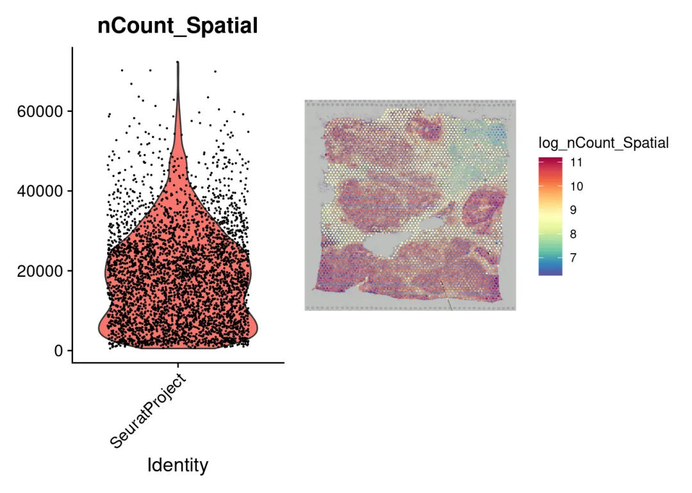
LogNormalize（）函数），会强制每个数据点在归一化后具有相同的基础转录本size，可能会有问题。
所以这里我们推荐使用sctransform构建基因表达的正则化负二项式模型，以便在保留生物方差的同时解释技术伪影
sdata <-SCTransform(sdata, assay ="Spatial", verbose =FALSE)
给spot添加上细胞类型信息
library(dplyr)
library(tibble)
library(readr)
spot_mixtures <-read_csv("./data/single/label_transfer_bc.csv") %>%
column_to_rownames(var =names(.)[1]) # 第一列变为行名
## New names:
## Rows: 3813 Columns: 14
## ── Column specification
## ──────────────────────────────────────────────────────── Delimiter: "," chr
## (2): ...1, predicted.id dbl (12): prediction.score.basal_like_2,
## prediction.score.macrophage, predic...
## ℹ Use `spec()` to retrieve the full column specification for this data. ℹ
## Specify the column types or set `show_col_types = FALSE` to quiet this message.
## • `` -> `...1`
# 查看前几行，确认读取正确
head(spot_mixtures)
## predicted.id prediction.score.basal_like_2
## AAACAAGTATCTCCCA-1 stroma 0.11484679
## AAACACCAATAACTGC-1 basal_like_1 0.15776799
## AAACAGAGCGACTCCT-1 stroma 0.20265625
## AAACAGGGTCTATATT-1 Tcell 0.00000000
## AAACAGTGTTCCTGGG-1 basal_like_2 0.56524049
## AAACATTTCCCGGATT-1 basal_like_1 0.01251615
## prediction.score.macrophage prediction.score.stroma
## AAACAAGTATCTCCCA-1 0.153870488 0.517985916
## AAACACCAATAACTGC-1 0.004139442 0.071592058
## AAACAGAGCGACTCCT-1 0.004635074 0.647263442
## AAACAGGGTCTATATT-1 0.082156196 0.003555226
## AAACAGTGTTCCTGGG-1 0.039651217 0.205372755
## AAACATTTCCCGGATT-1 0.000000000 0.006303732
## prediction.score.basal_like_1 prediction.score.mesenchymal
## AAACAAGTATCTCCCA-1 0.000000000 0.002253088
## AAACACCAATAACTGC-1 0.451562171 0.119925274
## AAACAGAGCGACTCCT-1 0.003861673 0.093951609
## AAACAGGGTCTATATT-1 0.000000000 0.000000000
## AAACAGTGTTCCTGGG-1 0.119638895 0.055270749
## AAACATTTCCCGGATT-1 0.919995962 0.036896252
## prediction.score.luminal_ar
## AAACAAGTATCTCCCA-1 0.00000000
## AAACACCAATAACTGC-1 0.13972294
## AAACAGAGCGACTCCT-1 0.00000000
## AAACAGGGTCTATATT-1 0.00000000
## AAACAGTGTTCCTGGG-1 0.01482589
## AAACATTTCCCGGATT-1 0.02047876
## prediction.score.mesenchymal_stem_like
## AAACAAGTATCTCCCA-1 0
## AAACACCAATAACTGC-1 0
## AAACAGAGCGACTCCT-1 0
## AAACAGGGTCTATATT-1 0
## AAACAGTGTTCCTGGG-1 0
## AAACATTTCCCGGATT-1 0
## prediction.score.Bcell prediction.score.endothelial
## AAACAAGTATCTCCCA-1 0.05846756 0.000000000
## AAACACCAATAACTGC-1 0.00000000 0.018518508
## AAACAGAGCGACTCCT-1 0.00000000 0.002224062
## AAACAGGGTCTATATT-1 0.11181668 0.000000000
## AAACAGTGTTCCTGGG-1 0.00000000 0.000000000
## AAACATTTCCCGGATT-1 0.00000000 0.003809152
## prediction.score.immunomodulatory prediction.score.Tcell
## AAACAAGTATCTCCCA-1 0.002115011 0.15046115
## AAACACCAATAACTGC-1 0.036771614 0.00000000
## AAACAGAGCGACTCCT-1 0.000000000 0.04540789
## AAACAGGGTCTATATT-1 0.013711666 0.78876023
## AAACAGTGTTCCTGGG-1 0.000000000 0.00000000
## AAACATTTCCCGGATT-1 0.000000000 0.00000000
## prediction.score.max
## AAACAAGTATCTCCCA-1 0.5179859
## AAACACCAATAACTGC-1 0.4515622
## AAACAGAGCGACTCCT-1 0.6472634
## AAACAGGGTCTATATT-1 0.7887602
## AAACAGTGTTCCTGGG-1 0.5652405
## AAACATTTCCCGGATT-1 0.9199960
colnames(spot_mixtures)
## [1] "predicted.id"
## [2] "prediction.score.basal_like_2"
## [3] "prediction.score.macrophage"
## [4] "prediction.score.stroma"
## [5] "prediction.score.basal_like_1"
## [6] "prediction.score.mesenchymal"
## [7] "prediction.score.luminal_ar"
## [8] "prediction.score.mesenchymal_stem_like"
## [9] "prediction.score.Bcell"
## [10] "prediction.score.endothelial"
## [11] "prediction.score.immunomodulatory"
## [12] "prediction.score.Tcell"
## [13] "prediction.score.max"
# [提取标签] 提取主要细胞类型标签（predicted.id）
labels <- spot_mixtures %>%
pull(predicted.id) %>%
as.character()
# 查看数据格式（可选）
print(head(labels))
## [1] "stroma" "basal_like_1" "stroma" "Tcell" "basal_like_2"
## [6] "basal_like_1"
# 检查 spot 顺序是否与 Seurat 对象一致
cat("Spot mixture order correct: ",
all(rownames(spot_mixtures) ==colnames(sdata)), "\n")
## Spot mixture order correct: TRUE
# 保证数据一致：将主要细胞类型添加到 metadata
sdata$cell_type <- labels
sdata$cell_type <-factor(sdata$cell_type)
2.1 传统PCA方法降维
# 运行常规PCA分析
sdata_pca <-RunPCA(sdata, assay ="SCT", verbose =FALSE)
sdata_pca <-FindNeighbors(sdata_pca, reduction ="pca", dims =1:30)
## Computing nearest neighbor graph
## Computing SNN
sdata_pca <-FindClusters(sdata_pca, verbose =FALSE, resolution =0.8)
sdata_pca <-RunUMAP(sdata_pca, reduction ="pca", dims =1:30)
## Warning: The default method for RunUMAP has changed from calling Python UMAP via reticulate to the R-native UWOT using the cosine metric
## To use Python UMAP via reticulate, set umap.method to 'umap-learn' and metric to 'correlation'
## This message will be shown once per session
## 15:53:47 UMAP embedding parameters a = 0.9922 b = 1.112
## 15:53:47 Read 3813 rows and found 30 numeric columns
## 15:53:47 Using Annoy for neighbor search, n_neighbors = 30
## 15:53:47 Building Annoy index with metric = cosine, n_trees = 50
## 0% 10 20 30 40 50 60 70 80 90 100%
## [----|----|----|----|----|----|----|----|----|----|
## **************************************************|
## 15:53:48 Writing NN index file to temp file /tmp/RtmpmjgJ9f/file2860162ac40af
## 15:53:48 Searching Annoy index using 1 thread, search_k = 3000
## 15:53:48 Annoy recall = 100%
## 15:53:49 Commencing smooth kNN distance calibration using 1 thread with target n_neighbors = 30
## 15:53:50 Initializing from normalized Laplacian + noise (using RSpectra)
## 15:53:50 Commencing optimization for 500 epochs, with 155966 positive edges
## 15:53:55 Optimization finished
# 保存PCA降维聚类的结果
saveRDS(sdata_pca,'./result/result_pca_sdata.rds')
# 绘制PCA降维聚类所得到的分簇结果
# 按clusters聚类结果
p1 <-DimPlot(sdata_pca, reduction ="umap", label =TRUE) +
labs(title ="PCA UMAP Clustering")
# 按真实注释的分类
p2 <-SpatialDimPlot(sdata_pca, label =TRUE, label.size =3, pt.size.factor =2.5) +
labs(title ="PCA Spatial Clustering")
## Scale for fill is already present.
## Adding another scale for fill, which will replace the existing scale.
# 空间分布结果clusters
p3 <-DimPlot(sdata_pca, reduction ="umap",group.by ='cell_type', label =TRUE, repel =TRUE) +
labs(title ="PCA UMAP Celltype")
p1 + p3 + p2
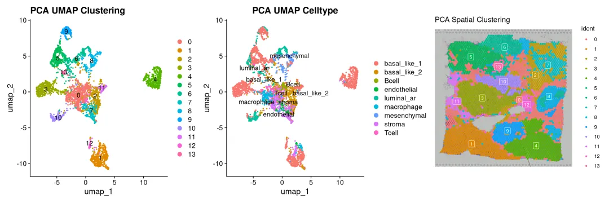
pp <- p1 + p3 + p2
ggsave('./result/clusters_PCA.pdf',pp)
## Saving 15 x 5 in image
2. 2 NMF降维聚类
# 运行NMF分析前先运行高变基因选取
sdata <-FindVariableFeatures(sdata,assay ='SCT', selection.method ="vst")
# 运行NMF
ndim <-30
sdata_NMF <-runNMF(sdata, k = ndim, assay="SCT")
sdata_NMF@reductions$NMF
## A dimensional reduction object with key NMF_
## Number of dimensions: 30
## Number of cells: 3813
## Projected dimensional reduction calculated: FALSE
## Jackstraw run: FALSE
## Computed using assay: SCT
进一步 UMAP 降维
# 基于NMF进行UMAP聚类
sdata_NMF <-FindNeighbors(sdata_NMF, reduction ="NMF", dims =1:ndim)
## Computing nearest neighbor graph
## Computing SNN
sdata_NMF <-FindClusters(sdata_NMF, verbose =FALSE, resolution =0.8)
sdata_NMF <-RunUMAP(sdata_NMF, reduction ="NMF", dims=1:ndim, reduction.name ="NMF_UMAP", reduction.key ="nmfUMAP_")
## 15:54:39 UMAP embedding parameters a = 0.9922 b = 1.112
## 15:54:39 Read 3813 rows and found 30 numeric columns
## 15:54:39 Using Annoy for neighbor search, n_neighbors = 30
## 15:54:39 Building Annoy index with metric = cosine, n_trees = 50
## 0% 10 20 30 40 50 60 70 80 90 100%
## [----|----|----|----|----|----|----|----|----|----|
## **************************************************|
## 15:54:40 Writing NN index file to temp file /tmp/RtmpmjgJ9f/file286012b331387
## 15:54:40 Searching Annoy index using 1 thread, search_k = 3000
## 15:54:41 Annoy recall = 100%
## 15:54:41 Commencing smooth kNN distance calibration using 1 thread with target n_neighbors = 30
## 15:54:43 Initializing from normalized Laplacian + noise (using RSpectra)
## 15:54:43 Commencing optimization for 500 epochs, with 150410 positive edges
## 15:54:47 Optimization finished
# 保留NMF降维聚类的结果
saveRDS(sdata_pca,'./result/result_nmf_sdata.rds')
# 基于NMF聚类clusters
p4 <-DimPlot(sdata_NMF, reduction ="NMF_UMAP", label =TRUE) +
labs(title ="NMF UMAP Clustering")
# 基于真实的注释结果
p5 <-SpatialDimPlot(sdata_NMF, label =TRUE, label.size =3, pt.size.factor =2.5) +
labs(title ="NMF Spatial Clustering")
## Scale for fill is already present.
## Adding another scale for fill, which will replace the existing scale.
# 在空间上的NMF聚类分布
p6 <-DimPlot(sdata_NMF, reduction ="NMF_UMAP",group.by ='cell_type', label =TRUE, repel=TRUE) +
labs(title ="NMF UMAP Celltype")
p4 + p6 + p5
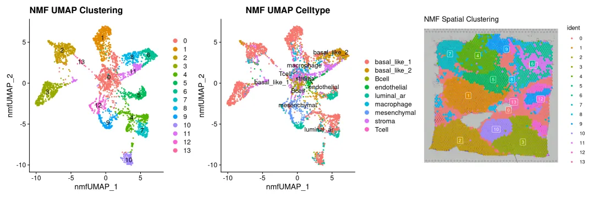
p <- p4 + p6 + p5
ggsave('./result/clusters_NMF.pdf',p)
## Saving 15 x 5 in image
# 看一下真实细胞类型的聚类情况（这个结果来自于反卷积）
p7 <-SpatialDimPlot(sdata, label =FALSE, group.by='cell_type',label.size =3, repel =TRUE, pt.size.factor =2.5) +
labs(title ="Celltype Spatial Clustering")
p7
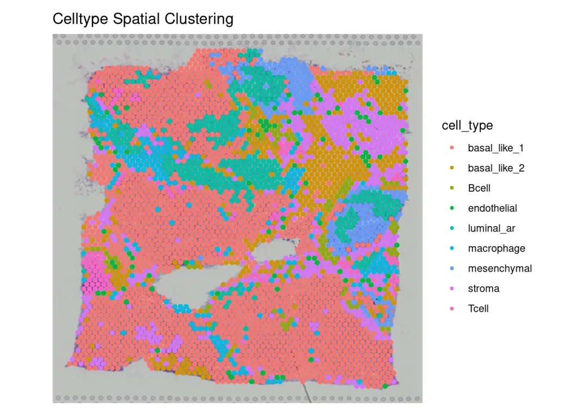
2.3 方法比较
将两种方法聚类结果进行比较
# 把分簇标签转换到原始sdata上
all(rownames(sdata_NMF@meta.data) ==rownames(sdata@meta.data))
## [1] TRUE
all(rownames(sdata_pca@meta.data) ==rownames(sdata@meta.data))
## [1] TRUE
sdata$NMF_clusters <- sdata_NMF$seurat_clusters
sdata$pca_clusters <- sdata_pca$seurat_clusters
# 比较两个降维方法聚类的重叠程度
table_pca_nmf <-table(sdata$pca_clusters,sdata$NMF_clusters)
print(table_pca_nmf)
##
## 0 1 2 3 4 5 6 7 8 9 10 11 12 13
## 0 415 37 2 26 11 36 2 20 37 0 8 6 12 1
## 1 4 0 428 2 0 0 0 0 0 0 0 0 0 2
## 2 60 6 0 0 3 14 205 1 96 0 5 8 6 1
## 3 1 384 0 0 1 13 0 2 1 0 1 0 0 0
## 4 0 0 0 394 0 0 0 0 0 0 1 0 0 0
## 5 0 0 0 0 150 0 0 173 0 0 1 0 0 0
## 6 1 3 0 0 114 9 0 3 11 127 0 0 2 0
## 7 40 0 0 2 0 0 26 0 2 0 1 157 0 0
## 8 5 0 0 0 3 0 0 0 5 49 0 0 134 0
## 9 1 0 0 0 4 0 0 0 0 2 161 0 0 0
## 10 0 0 0 0 0 165 0 0 0 0 0 0 0 0
## 11 68 8 0 1 0 0 1 0 28 0 0 0 0 0
## 12 23 1 2 0 0 0 0 1 2 0 0 0 0 43
## 13 0 0 0 0 32 0 0 0 0 0 0 0 0 0
# 给行列名添加上名称
rownames(table_pca_nmf) <-paste0("PCA_", 0:13)
colnames(table_pca_nmf) <-paste0("NMF_", 0:13)
print(table_pca_nmf)
##
## NMF_0 NMF_1 NMF_2 NMF_3 NMF_4 NMF_5 NMF_6 NMF_7 NMF_8 NMF_9 NMF_10
## PCA_0 415 37 2 26 11 36 2 20 37 0 8
## PCA_1 4 0 428 2 0 0 0 0 0 0 0
## PCA_2 60 6 0 0 3 14 205 1 96 0 5
## PCA_3 1 384 0 0 1 13 0 2 1 0 1
## PCA_4 0 0 0 394 0 0 0 0 0 0 1
## PCA_5 0 0 0 0 150 0 0 173 0 0 1
## PCA_6 1 3 0 0 114 9 0 3 11 127 0
## PCA_7 40 0 0 2 0 0 26 0 2 0 1
## PCA_8 5 0 0 0 3 0 0 0 5 49 0
## PCA_9 1 0 0 0 4 0 0 0 0 2 161
## PCA_10 0 0 0 0 0 165 0 0 0 0 0
## PCA_11 68 8 0 1 0 0 1 0 28 0 0
## PCA_12 23 1 2 0 0 0 0 1 2 0 0
## PCA_13 0 0 0 0 32 0 0 0 0 0 0
##
## NMF_11 NMF_12 NMF_13
## PCA_0 6 12 1
## PCA_1 0 0 2
## PCA_2 8 6 1
## PCA_3 0 0 0
## PCA_4 0 0 0
## PCA_5 0 0 0
## PCA_6 0 2 0
## PCA_7 157 0 0
## PCA_8 0 134 0
## PCA_9 0 0 0
## PCA_10 0 0 0
## PCA_11 0 0 0
## PCA_12 0 0 43
## PCA_13 0 0 0
这样看不是很直观，我们将其转换成百分比化成热图
row_percent <-prop.table(table_pca_nmf, margin =1) # margin=1 表示按行
row_percent <-round(row_percent, 2) # 保留1位小数
print("行百分比（PCA 簇 → NMF 分布）:")
## [1] "行百分比（PCA 簇 → NMF 分布）:"
print(row_percent)
##
## NMF_0 NMF_1 NMF_2 NMF_3 NMF_4 NMF_5 NMF_6 NMF_7 NMF_8 NMF_9 NMF_10
## PCA_0 0.68 0.06 0.00 0.04 0.02 0.06 0.00 0.03 0.06 0.00 0.01
## PCA_1 0.01 0.00 0.98 0.00 0.00 0.00 0.00 0.00 0.00 0.00 0.00
## PCA_2 0.15 0.01 0.00 0.00 0.01 0.03 0.51 0.00 0.24 0.00 0.01
## PCA_3 0.00 0.95 0.00 0.00 0.00 0.03 0.00 0.00 0.00 0.00 0.00
## PCA_4 0.00 0.00 0.00 1.00 0.00 0.00 0.00 0.00 0.00 0.00 0.00
## PCA_5 0.00 0.00 0.00 0.00 0.46 0.00 0.00 0.53 0.00 0.00 0.00
## PCA_6 0.00 0.01 0.00 0.00 0.42 0.03 0.00 0.01 0.04 0.47 0.00
## PCA_7 0.18 0.00 0.00 0.01 0.00 0.00 0.11 0.00 0.01 0.00 0.00
## PCA_8 0.03 0.00 0.00 0.00 0.02 0.00 0.00 0.00 0.03 0.25 0.00
## PCA_9 0.01 0.00 0.00 0.00 0.02 0.00 0.00 0.00 0.00 0.01 0.96
## PCA_10 0.00 0.00 0.00 0.00 0.00 1.00 0.00 0.00 0.00 0.00 0.00
## PCA_11 0.64 0.08 0.00 0.01 0.00 0.00 0.01 0.00 0.26 0.00 0.00
## PCA_12 0.32 0.01 0.03 0.00 0.00 0.00 0.00 0.01 0.03 0.00 0.00
## PCA_13 0.00 0.00 0.00 0.00 1.00 0.00 0.00 0.00 0.00 0.00 0.00
##
## NMF_11 NMF_12 NMF_13
## PCA_0 0.01 0.02 0.00
## PCA_1 0.00 0.00 0.00
## PCA_2 0.02 0.01 0.00
## PCA_3 0.00 0.00 0.00
## PCA_4 0.00 0.00 0.00
## PCA_5 0.00 0.00 0.00
## PCA_6 0.00 0.01 0.00
## PCA_7 0.69 0.00 0.00
## PCA_8 0.00 0.68 0.00
## PCA_9 0.00 0.00 0.00
## PCA_10 0.00 0.00 0.00
## PCA_11 0.00 0.00 0.00
## PCA_12 0.00 0.00 0.60
## PCA_13 0.00 0.00 0.00
library(pheatmap)
pheatmap(row_percent,
cluster_rows =FALSE, # 行聚类
cluster_cols =FALSE, # 列聚类
display_numbers =FALSE, # 显示数字
fontsize_number =8, # 数字大小
color =colorRampPalette(c("white", "yellow", "orange", "red", "darkred"))(100),
main ="PCA vs NMF Clustering Overlap Heatmap",
fontsize_row =10,
fontsize_col =10,
angle_col =45)
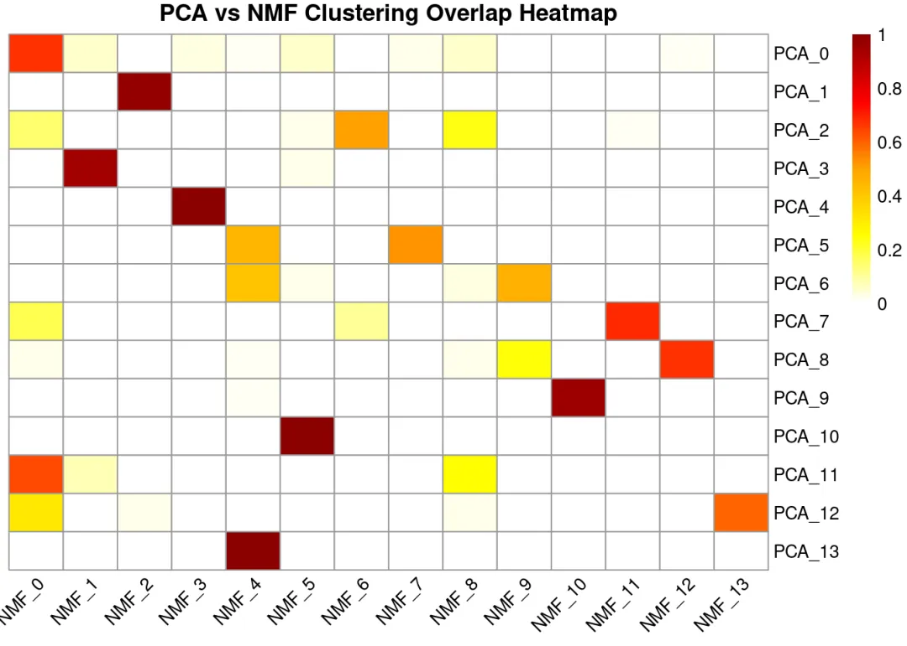
调整一下顺序让结果更加直观
desired_row_order <-paste0("PCA_", c(0,3,1,4,13,10,2,5,11,6,9,7,8,12))
desired_col_order <-paste0("NMF_", 0:13)
# 重新排序矩阵
row_percent_ordered <- row_percent[desired_row_order, desired_col_order]
pheatmap(row_percent_ordered,
cluster_rows =FALSE, # 行聚类
cluster_cols =FALSE, # 列聚类
display_numbers =FALSE, # 显示数字
fontsize_number =8, # 数字大小
color =colorRampPalette(c("white", "yellow", "orange", "red", "darkred"))(100),
main ="PCA vs NMF Clustering Overlap Heatmap",
fontsize_row =10,
fontsize_col =10,
angle_col =45)
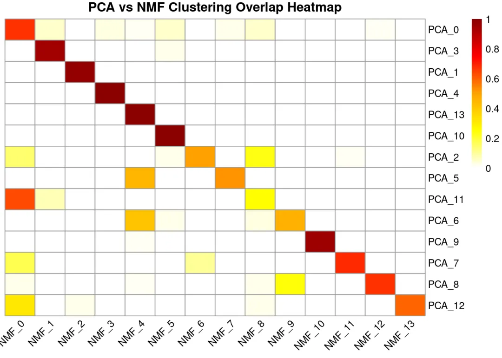
大多数NMF聚类与PCA聚类之间存在较强的对应关系，说明两种降维方法在整体上捕捉到了相似的潜在生物学结构。 我们再比较一下两种方法聚类得到的marker
deg_NMF <-FindAllMarkers(sdata, group.by ="NMF_clusters", only.pos=TRUE, min.pct=0.1)
## Calculating cluster 0
## Calculating cluster 1
## Calculating cluster 2
## Calculating cluster 3
## Calculating cluster 4
## Calculating cluster 5
## Calculating cluster 6
## Calculating cluster 7
## Calculating cluster 8
## Calculating cluster 9
## Calculating cluster 10
## Calculating cluster 11
## Calculating cluster 12
## Calculating cluster 13
deg_pca <-FindAllMarkers(sdata, group.by ="pca_clusters", only.pos=TRUE, min.pct=0.1)
## Calculating cluster 0
## Calculating cluster 1
## Calculating cluster 2
## Calculating cluster 3
## Calculating cluster 4
## Calculating cluster 5
## Calculating cluster 6
## Calculating cluster 7
## Calculating cluster 8
## Calculating cluster 9
## Calculating cluster 10
## Calculating cluster 11
## Calculating cluster 12
## Calculating cluster 13
# ====================== NMF clusters 的 top5 ======================
top5_NMF <- deg_NMF %>%
group_by(cluster) %>%# 按 NMF cluster 分组
arrange(desc(avg_log2FC)) %>%# 按 log2FC 降序排列
slice_head(n =5) %>%# 每组取前 5 个
ungroup() %>%
distinct(gene, .keep_all =TRUE)
# 查看 NMF 每个 cluster 的 top5 基因
print("=== NMF clusters top5 markers ===")
## [1] "=== NMF clusters top5 markers ==="
print(top5_NMF)
## # A tibble: 68 × 7
## p_val avg_log2FC pct.1 pct.2 p_val_adj cluster gene
## <dbl> <dbl> <dbl> <dbl> <dbl> <fct> <chr>
## 1 7.91e-207 2.96 1 0.982 1.56e-202 0 IGLC2
## 2 2.97e- 52 2.84 0.644 0.455 5.87e- 48 0 IGHG2
## 3 8.64e-159 2.80 0.955 0.618 1.71e-154 0 IGLC3
## 4 3.80e- 25 2.73 0.108 0.023 7.51e- 21 0 FAM30A
## 5 4.09e- 18 2.71 0.136 0.046 8.08e- 14 0 IGHD
## 6 9.31e-103 3.35 0.442 0.089 1.84e- 98 1 NPY1R
## 7 1.27e-193 3.29 0.859 0.26 2.51e-189 1 FCGR3B
## 8 2.56e-104 2.95 0.351 0.048 5.05e-100 1 AC139769.2
## 9 1.26e- 42 2.93 0.164 0.026 2.49e- 38 1 CST2
## 10 5.48e-174 2.89 0.599 0.093 1.08e-169 1 LINC02224
## # ℹ 58 more rows
# 只提取基因名（有序向量，用于后续 DotPlot 等）
top5_NMF_genes <- top5_NMF %>%pull(gene)
# ====================== PCA clusters 的 top5 ======================
top5_PCA <- deg_pca %>%
group_by(cluster) %>%
arrange(desc(avg_log2FC)) %>%
slice_head(n =5) %>%
ungroup() %>%
distinct(gene, .keep_all =TRUE) #去重
# 查看 PCA 每个 cluster 的 top5 基因
print("=== PCA clusters top5 markers ===")
## [1] "=== PCA clusters top5 markers ==="
print(top5_PCA)
## # A tibble: 70 × 7
## p_val avg_log2FC pct.1 pct.2 p_val_adj cluster gene
## <dbl> <dbl> <dbl> <dbl> <dbl> <fct> <chr>
## 1 3.88e-210 3.27 1 0.982 7.66e-206 0 IGLC2
## 2 1.45e- 87 3.18 0.723 0.441 2.86e- 83 0 IGHG2
## 3 6.96e-160 3.12 0.945 0.62 1.38e-155 0 IGLC3
## 4 8.75e-109 2.96 0.724 0.402 1.73e-104 0 JCHAIN
## 5 1.39e- 98 2.96 0.45 0.122 2.74e- 94 0 CD79A
## 6 5.05e- 58 4.16 0.119 0.007 9.98e- 54 1 SMCR2
## 7 0 4.12 0.828 0.103 0 1 ARPP21
## 8 0 4.04 0.794 0.089 0 1 Z82214.2
## 9 0 3.99 0.846 0.091 0 1 SPAG6
## 10 7.27e-139 3.93 0.314 0.022 1.44e-134 1 TCL1B
## # ℹ 60 more rows
# 只提取基因名（有序向量）
top5_PCA_genes <- top5_PCA %>%pull(gene)
# 计算交集top5的clusters差异基因
shared_genes <-intersect(top5_NMF_genes, top5_PCA_genes)
cat("交集基因数:", length(shared_genes), "\n")
## 交集基因数: 45
可以看出两个方法的重合度还是比较高的
DotPlot(sdata,
features = top5_NMF_genes,
group.by ="pca_clusters") +
theme(axis.text.x =element_text(angle =45, hjust =1)) +
ggtitle("Top 5 markers per NMF cluster")
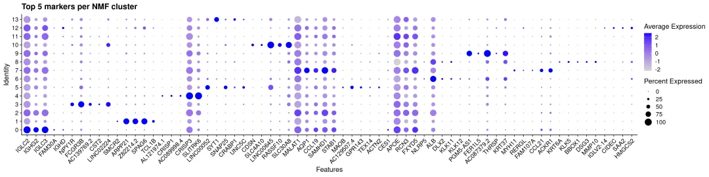
使用NMF方法降维聚类的top差异基因也能很好地在pca方法的分类中特异表达
再来真实细胞类型分布进行比较，先来看NMF降维聚类结果
table_NMF_celltype <-table(sdata$NMF_clusters, sdata$cell_type)
print(table_NMF_celltype)
##
## basal_like_1 basal_like_2 Bcell endothelial luminal_ar macrophage
## 0 75 81 71 48 0 91
## 1 364 7 1 0 0 31
## 2 319 30 1 7 0 27
## 3 386 0 4 4 0 5
## 4 230 16 0 0 55 7
## 5 44 44 6 2 124 6
## 6 8 188 0 2 0 1
## 7 111 5 0 4 43 24
## 8 49 79 3 0 0 21
## 9 13 0 0 0 96 0
## 10 141 2 4 1 22 4
## 11 0 5 0 26 0 0
## 12 26 8 0 0 21 0
## 13 38 1 0 0 0 1
##
## mesenchymal stroma Tcell
## 0 14 154 84
## 1 0 15 21
## 2 0 48 0
## 3 0 26 0
## 4 10 0 0
## 5 0 10 1
## 6 1 33 1
## 7 0 2 11
## 8 15 9 6
## 9 69 0 0
## 10 0 3 1
## 11 0 139 1
## 12 93 6 0
## 13 0 7 0
row_percent2 <-prop.table(table_NMF_celltype, margin =1) # margin=1 表示按行
row_percent2 <-round(row_percent2, 2) # 保留1位小数
print(row_percent2)
##
## basal_like_1 basal_like_2 Bcell endothelial luminal_ar macrophage
## 0 0.12 0.13 0.11 0.08 0.00 0.15
## 1 0.83 0.02 0.00 0.00 0.00 0.07
## 2 0.74 0.07 0.00 0.02 0.00 0.06
## 3 0.91 0.00 0.01 0.01 0.00 0.01
## 4 0.72 0.05 0.00 0.00 0.17 0.02
## 5 0.19 0.19 0.03 0.01 0.52 0.03
## 6 0.03 0.80 0.00 0.01 0.00 0.00
## 7 0.56 0.03 0.00 0.02 0.22 0.12
## 8 0.27 0.43 0.02 0.00 0.00 0.12
## 9 0.07 0.00 0.00 0.00 0.54 0.00
## 10 0.79 0.01 0.02 0.01 0.12 0.02
## 11 0.00 0.03 0.00 0.15 0.00 0.00
## 12 0.17 0.05 0.00 0.00 0.14 0.00
## 13 0.81 0.02 0.00 0.00 0.00 0.02
##
## mesenchymal stroma Tcell
## 0 0.02 0.25 0.14
## 1 0.00 0.03 0.05
## 2 0.00 0.11 0.00
## 3 0.00 0.06 0.00
## 4 0.03 0.00 0.00
## 5 0.00 0.04 0.00
## 6 0.00 0.14 0.00
## 7 0.00 0.01 0.06
## 8 0.08 0.05 0.03
## 9 0.39 0.00 0.00
## 10 0.00 0.02 0.01
## 11 0.00 0.81 0.01
## 12 0.60 0.04 0.00
## 13 0.00 0.15 0.00
library(pheatmap)
pheatmap(row_percent2,
cluster_rows =FALSE, # 行聚类
cluster_cols =FALSE, # 列聚类
display_numbers =FALSE, # 显示数字
fontsize_number =8, # 数字大小
color =colorRampPalette(c("white", "yellow", "orange", "red", "darkred"))(100),
main ="NMF vs celltype Clustering Overlap Heatmap",
fontsize_row =10,
fontsize_col =10,
angle_col =45)
这里每一行的和为1，代表每个cluster中包含的细胞类型比例，可以看出每个cluster基本上能够覆盖单一细胞类型，除了cluster0 接下来我们看PCA的结果
table_pca_celltype <-table(sdata$pca_clusters, sdata$cell_type)
row_percent3 <-prop.table(table_pca_celltype, margin =1) # margin=1 表示按行
row_percent3 <-round(row_percent3, 2) # 保留1位小数
print(table_pca_celltype)
##
## basal_like_1 basal_like_2 Bcell endothelial luminal_ar macrophage
## 0 12 53 89 20 2 150
## 1 322 30 0 10 0 25
## 2 42 320 0 0 2 4
## 3 365 3 0 0 2 14
## 4 378 0 0 2 0 4
## 5 244 5 0 3 55 9
## 6 121 12 0 0 99 1
## 7 0 2 0 54 0 0
## 8 24 6 0 0 26 0
## 9 137 1 1 1 26 2
## 10 27 13 0 1 121 1
## 11 88 8 0 1 0 4
## 12 40 13 0 2 0 4
## 13 4 0 0 0 28 0
##
## mesenchymal stroma Tcell
## 0 6 184 97
## 1 0 49 0
## 2 19 17 1
## 3 0 0 19
## 4 0 11 0
## 5 0 0 8
## 6 37 0 0
## 7 0 171 1
## 8 140 0 0
## 9 0 0 0
## 10 0 2 0
## 11 0 5 0
## 12 0 13 0
## 13 0 0 0
pheatmap(row_percent3,
cluster_rows =FALSE, # 行聚类
cluster_cols =FALSE, # 列聚类
display_numbers =FALSE, # 显示数字
fontsize_number =8, # 数字大小
color =colorRampPalette(c("white", "yellow", "orange", "red", "darkred"))(100),
main ="PCA vs celltype Clustering Overlap Heatmap",
fontsize_row =10,
fontsize_col =10,
angle_col =45)
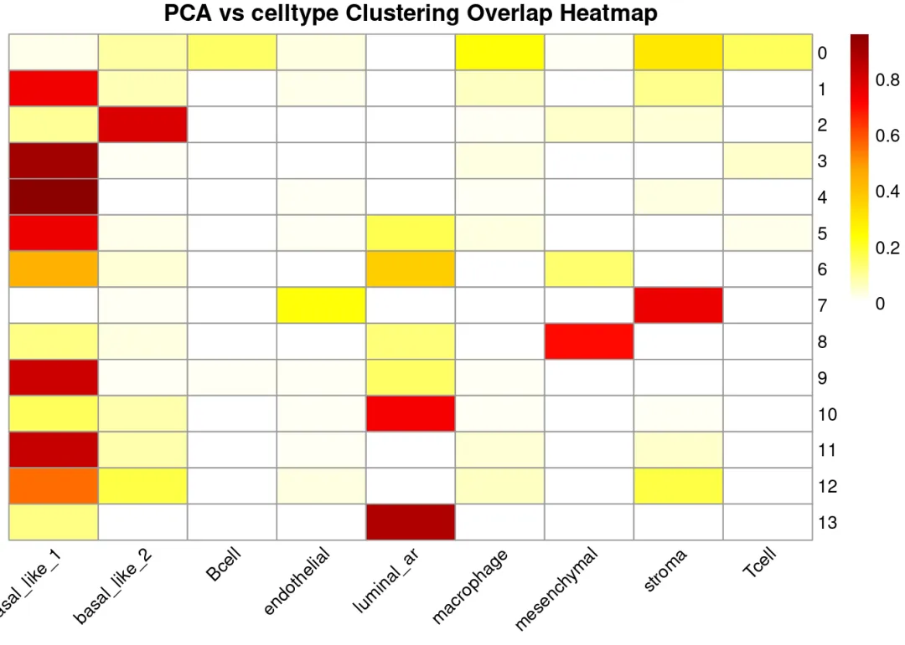
我们还可以看一下不同细胞类型的marker基因在不同聚类方法下是否能够区分开来（这里的marker基因来源细胞类型注释后Findallmarkers）
library(ggplot2)
genelist <-list(
Tcell=c("CCR7","GZMK"),
stroma=c("COL14A1","TNXB"),
mesenchymal=c("KRT5","KRT14" ),
macrophage=c("MS4A4A","CD163"),
luminal_ar=c("LINC00645","NXPH1"),
endothelial=c("SELP","ACKR1"),
Bcell=c("JCHAIN", "IGHG2"),
basal_like_2=c('MALAT1','STAB1'),
basal_like_1=c("FCGR3B","PIP")
)
# 绘制 DotPlot 并倾斜 x 轴标签
DotPlot(sdata,
features = genelist,
cols =c("grey", "red"),
group.by ="cell_type") +
labs(title ="Celltype marker gene expression") +
theme(axis.text.x =element_text(angle =45, # 倾斜角度：45° 最常用
hjust =1, # 水平对齐：右对齐，使标签不超出图边界
vjust =1)) # 垂直对齐（可选，微调位置）
## Warning: The `facets` argument of `facet_grid()` is deprecated as of ggplot2 2.2.0.
## ℹ Please use the `rows` argument instead.
## ℹ The deprecated feature was likely used in the Seurat package.
## Please report the issue at <https://github.com/satijalab/seurat/issues>.
## This warning is displayed once every 8 hours.
## Call `lifecycle::last_lifecycle_warnings()` to see where this warning was
## generated.
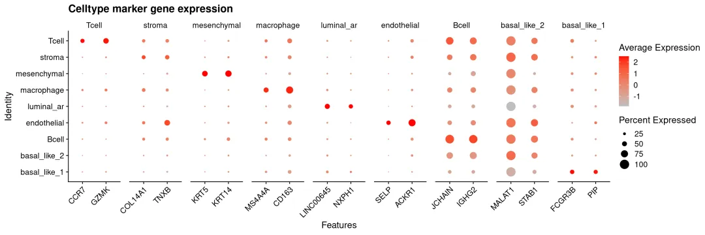
DotPlot(sdata,
features = genelist,
cols =c("grey", "red"),
group.by ="NMF_clusters") +
labs(title ="NMF_clusters marker gene expression") +
theme(axis.text.x =element_text(angle =45, # 倾斜角度：45° 最常用
hjust =1, # 水平对齐：右对齐，使标签不超出图边界
vjust =1)) # 垂直对齐（可选，微调位置）
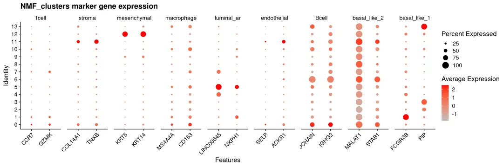
DotPlot(sdata,
features = genelist,
cols =c("grey", "red"),
group.by ="pca_clusters") +
labs(title ="PCA_clusters marker gene expression") +
theme(axis.text.x =element_text(angle =45, # 倾斜角度：45° 最常用
hjust =1, # 水平对齐：右对齐，使标签不超出图边界
vjust =1)) # 垂直对齐（可选，微调位置）
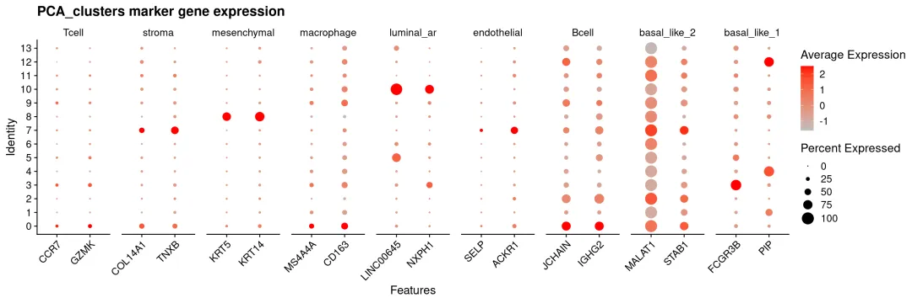
可以看出NMF对于主要的细胞类型及marker都能很好分辨出来，如stroma、mesenchymal、luminal_ar等。但由于空间分辨率限制，免疫细胞高度混杂且激活状态重叠，导致无论是NMF方法还是传统PCA方法聚类都很难将其区分出来。在空间上我们也可以比较一下聚类结果
p5 + p7+ p2
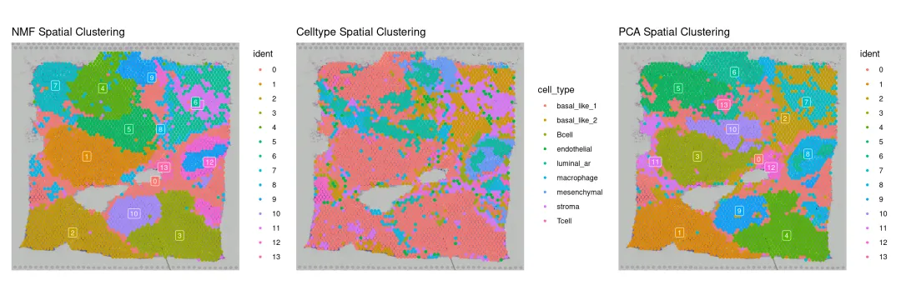
ppp = p5 + p7+ p2
ggsave('./result/clusters_compare.pdf',ppp)
## Saving 15 x 5 in image
在这个乳腺癌空间转录组样本中，作者手动标注了两个原位导管癌①和②（DCIS，Ductal Carcinoma In Situ）区域，NMF在①号区域突出清晰而在②号区域不如PCA效果好
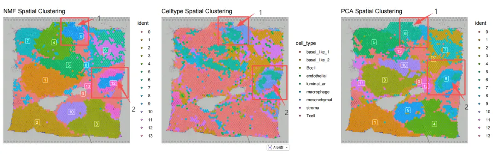
比较起来NMF与PCA降维对解释空间异质性方面各有千秋，在实际分析过程中可以根据最终分析效果来选择。 如果有单细胞参考数据的话，还是推荐大家使用去卷积的方法对类似的低分辨率的空间转录组数据。我们也有对应的教程供大家参考一文搞定空转数据反卷积分析
3. NMF 实操(多样本)
GeneNMF除了在降维上替代PCA之外，还可以识别跨多个样本的一致NMF程序。这里我们在两个大脑组织样本上进行演示，进行聚类：
3.1 数据读取
library(Seurat)
library(SeuratDisk) # 可选，如果需要 h5ad 转换
## Registered S3 method overwritten by 'SeuratDisk':
## method from
## as.sparse.H5Group Seurat
library(stringr)
# 数据根目录
data_root <-"./data/multiple"
# 获取所有包含 outs 的子目录（Visium 标准结构：.../sample_id/outs）
outs_dirs <-list.dirs(path = data_root,
full.names =TRUE,
recursive =TRUE) %>%
.[str_ends(., "/outs")] # 只保留以 /outs 结尾的路径
# 创建一个空的 list，用于存放每个样本的 Seurat 对象
seurat_dct <-list()
# 循环读取每个样本
for (outs_path in outs_dirs) {
# 从路径提取样本 ID，例如：/data/.../sample123/outs → sample123
sample_id <-basename(dirname(outs_path)) # dirname(outs) 就是样本文件夹名
# 使用 Load10X_Spatial 读取 Visium 数据
seurat_obj <-Load10X_Spatial(
data.dir = outs_path,
filename ="filtered_feature_bc_matrix.h5", # Visium v1 常用 h5 文件
assay ="Spatial",
slice = sample_id, # 图像 slice 名称，建议用样本 ID
filter.matrix =TRUE, # 过滤非组织 spot
to.upper =FALSE# 基因名保持原样
)
# 可选：如果你的 outs 中只有 matrix.mtx.gz 等经典文件，Seurat 会自动识别
# 将对象存入列表
seurat_dct[[sample_id]] <- seurat_obj
cat("Loaded sample:", sample_id, "\n")
}
## Loaded sample: Anterior
## Loaded sample: Posterior
# 查看结果
names(seurat_dct)
## [1] "Anterior" "Posterior"
# [1] "Anterior" "Posterior" ...
合并为一个seurat对象
seurat_list <-lapply(seurat_dct, function(obj) {
SCTransform(obj,
assay ="Spatial", # 关键：指定使用 Spatial assay
verbose =FALSE)
})
# 添加样本来源 metadata
for (sample innames(seurat_list)) {
seurat_list[[sample]]$sample <- sample
}
# 合并两个样本
data <-merge(seurat_list[[1]], y = seurat_list[-1])
## Warning: Some cell names are duplicated across objects provided. Renaming to
## enforce unique cell names.
**3.**2 运行NMF分析
# 分别对两个样本对象使用NMF
seu.list <-SplitObject(data, split.by ="sample")
geneNMF.programs <-multiNMF(seu.list,
assay ="SCT", # 使用 SCT assay 的 Pearson residuals
k =4:10, # 测试 k=4 到 k=10，multiNMF 会自动评估不同 k 的稳定性并推荐最佳 k
min.exp =0.05, # 最小表达比例过滤
nfeatures =2000) # 输入高变基因数量
将识别的基因程序合并
geneNMF.metaprograms <-getMetaPrograms(geneNMF.programs,
metric ="cosine", # 使用余弦方法合并模块
weight.explained =0.5,
nMP=6, # 控制模块数量
max.genes=200)
可以查看NMF得到的模块信息
geneNMF.metaprograms$metaprograms.metrics
## sampleCoverage silhouette meanSimilarity numberGenes numberPrograms
## MP1 1.0 0.6399917 0.683 38 11
## MP2 1.0 0.6248133 0.676 27 9
## MP3 1.0 0.3740632 0.506 37 23
## MP4 1.0 0.2940547 0.375 73 19
## MP5 1.0 0.1159719 0.238 101 29
## MP6 0.5 0.7723778 0.807 53 7
-
sampleCoverage：样本覆盖率。表示这个meta-program（MP）在多少比例的样本中被检测到（即有显著权重）。值越接近1，说明该程序在多个样本中普遍存在，越具有跨样本稳定性
-
silhouette：平均轮廓宽度。聚类质量指标，用于评估该meta-program内部的spot/细胞分配紧致度和与其他程序的分离度。值越接近1，表示程序内相似性高、程序间区分清晰
-
meanSimilarity：平均相似度。衡量该meta-program与其他meta-programs的平均相似性。值越低越好，表示程序之间区分度高、不冗余。
-
numberGenes：模块中基因数量。通常指贡献前50%权重的基因数，或top驱动基因数。反映模块的复杂度和特异性（太多可能过泛，太少可能过窄）
3.3 可视化结果
绘制模块相似度
ht <- GeneNMF::plotMetaPrograms(geneNMF.metaprograms,similarity.cutoff =c(0.1,1))
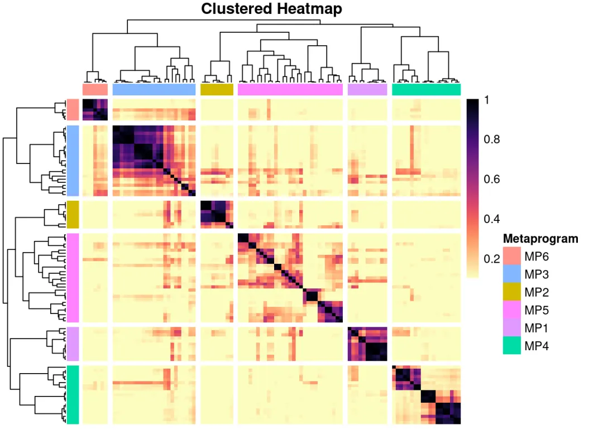
ggsave('./result/clusters_heatmap.pdf',ht)
## Saving 7 x 5 in image
我们可以获取每个模块中的基因来进一步分析生物学意义
4. 4 基因集富集分析
mp.genes <- geneNMF.metaprograms$metaprograms.genes
head(mp.genes)
## $MP1
## [1] "Aebp1" "Igf2" "Slc13a4" "Fmod" "Slc6a20a" "Col1a2"
## [7] "Myoc" "Gjb2" "Ogn" "Slc6a13" "Pcolce" "Bmp6"
## [13] "Mgp" "Igfbp2" "Bgn" "Col1a1" "Nupr1" "Islr"
## [19] "Serping1" "Rbp1" "Cfh" "Ifitm1" "Efemp1" "Bmp7"
## [25] "Thbd" "S100a11" "Ifitm2" "Acta2" "Fbln1" "Tagln"
## [31] "Ifitm3" "Prelp" "Foxc1" "Lyz2" "Slc22a8" "Anxa2"
## [37] "Msx1" "Crabp2"
##
## $MP2
## [1] "Lrrc10b" "Nexn" "Syndig1l" "Gpr88" "Dach1" "Pde10a"
## [7] "Scn4b" "Tac1" "Prkch" "Lpl" "Htr1b" "Gng7"
## [13] "Pdyn" "Strip2" "Penk" "Lingo3" "Gpr83" "Rasd2"
## [19] "Kcnab1" "Ecel1" "Ppp1r1b" "Nts" "Rasgrp2" "Klhl13"
## [25] "Adcy5" "Tbc1d8" "Mal"
##
## $MP3
## [1] "Ermn" "Ugt8a" "Fa2h" "Mog" "Ppp1r14a" "Gjc2"
## [7] "Anln" "Gjb1" "Tmem88b" "Cldn11" "Gpr37" "Mag"
## [13] "Mal" "Pdlim2" "Evi2a" "Myrf" "Pllp" "Prr18"
## [19] "Hapln2" "Klk6" "Serpinb1a" "Ndrg1" "Bcas1" "Tspan2"
## [25] "Gatm" "Aspa" "Tmem63a" "Rhog" "Plekhh1" "Opalin"
## [31] "Nkx6-2" "Trf" "Sox10" "Mobp" "Gsn" "Litaf"
## [37] "Gjc3"
##
## $MP4
## [1] "Neurod1" "Gm2694" "Shisa8" "Homer3"
## [5] "Tuba8" "Ctxn3" "Cbln1" "Grm4"
## [9] "Dusp5" "Calb2" "Vipr2" "Trim62"
## [13] "Shf" "Ablim3" "6430571L13Rik" "Mtcl1"
## [17] "Chn2" "Cacng5" "Usp3" "Grin2c"
## [21] "Tle2" "Nrep" "Mmp24" "Sbk1"
## [25] "Gpsm1" "Zic1" "Pde1c" "Rgs8"
## [29] "Wscd2" "Ryr1" "Npr1" "Strip2"
## [33] "Pax6" "Megf11" "Ifitm3" "Meis1"
## [37] "Calb1" "Vim" "Garnl3" "Itpr1"
## [41] "Plch2" "Slc13a3" "Hapln2" "Inpp5a"
## [45] "Crhr1" "Mgp" "Lingo3" "Rab37"
## [49] "Cadps2" "Hap1" "Kcnip1" "Boc"
## [53] "Mtss1" "Igfbp2" "Litaf" "Trf"
## [57] "Fa2h" "Penk" "Gabrd" "Inpp5j"
## [61] "Mobp" "Gatm" "Mag" "Reln"
## [65] "Slc44a1" "Adarb2" "Slc12a2" "Gria4"
## [69] "Kcnab3" "Fabp7" "Serpinh1" "Ntng1"
## [73] "Car4"
##
## $MP5
## [1] "Satb2" "Neurod6" "Slc30a3" "Myl4" "Trbc2" "Gm11549"
## [7] "Fezf2" "Npy2r" "Lypd1" "Epop" "Tbr1" "Syt17"
## [13] "Mas1" "Nwd2" "Myh7" "Pcdh8" "Hs3st2" "Rprm"
## [19] "Vip" "Dkk3" "Lmo3" "Kcnv1" "Stx1a" "Tac2"
## [25] "Adra1b" "Bhlhe22" "Ak5" "Otof" "Ngb" "C1ql3"
## [31] "Dkkl1" "Galnt9" "Pde1a" "Grp" "Robo3" "Hap1"
## [37] "Mpped1" "Cnih3" "Akap5" "Mgp" "Rasal1" "Cckbr"
## [43] "Satb1" "Atp2b4" "Gm13205" "Slit1" "Cacng3" "Cadps2"
## [49] "Rasl10a" "Unc5d" "Gpr83" "Chrna4" "Syt16" "Pcdh19"
## [55] "Cpne7" "Mal" "Tmem178" "Cpne6" "Dact2" "Garnl3"
## [61] "Neurod2" "Kcnip2" "Grb14" "Rgs14" "Rasgrf2" "Pllp"
## [67] "Tspan2" "Lingo3" "Gm19410" "Rasgef1c" "Kcnh3" "Nptxr"
## [73] "Plxnd1" "Ptpro" "Miat" "Resp18" "Lypd6b" "Mef2c"
## [79] "Col25a1" "Ntng1" "Kcnc2" "Slain1" "Gng4" "Slc7a11"
## [85] "Myo5b" "Egr3" "Ndrg1" "Doc2a" "Lmo7" "Gal3st1"
## [91] "Kcnh7" "Htr1b" "Ldb2" "Nkx6-2" "Mobp" "Kcnab1"
## [97] "Synpo" "Mlip" "Sel1l3" "Kcnq5" "Gpr26"
##
## $MP6
## [1] "Tnnt1" "Plekhg1" "Tcf7l2" "Slc17a6" "Prkcd" "Vipr2"
## [7] "Amotl1" "Ntng1" "Ramp3" "Adra1b" "Ptpn3" "Kcnc2"
## [13] "Pdp1" "Zfp804a" "Chrna4" "Zmat4" "Cit" "Zfhx3"
## [19] "Rasd1" "Grm4" "Nefh" "Scn4b" "Tmem88b" "Rab37"
## [25] "Mog" "Kcnab3" "Ccdc184" "Vamp1" "Mal" "Mag"
## [31] "Ppp1r14a" "Zdhhc22" "Ermn" "Prr18" "Gpr37" "Cldn11"
## [37] "Pcp4l1" "Prkch" "Trpc3" "Ankrd34c" "Bcas1" "Bok"
## [43] "Gabra4" "Mobp" "Nefm" "Vwc2" "Scn1a" "Pllp"
## [49] "Slc6a11" "Sox10" "Limk1" "Ptpn4" "Gatm"
对每个基因集进行富集分析
# NMF提供了直接的代码
library(msigdbr)
library(fgsea)
top_p <-lapply(geneNMF.metaprograms$metaprograms.genes, function(program) {
runGSEA(program,
universe=rownames(data),
species ="Mus musculus",
category ="C5", # 选择GO数据库来自C5分类
subcategory ="GO:BP")
})
每个模块对应富集到不同的GO通路
top_p
## $MP1
## pathway pval
## <char> <num>
## 1: GOBP_SKELETAL_SYSTEM_DEVELOPMENT 4.987496e-11
## 2: GOBP_CONNECTIVE_TISSUE_DEVELOPMENT 1.483977e-08
## 3: GOBP_CARTILAGE_DEVELOPMENT 3.760460e-08
## 4: GOBP_OSSIFICATION 4.049150e-08
## 5: GOBP_COLLAGEN_FIBRIL_ORGANIZATION 9.781219e-08
## ---
## 630: GOBP_ANATOMICAL_STRUCTURE_FORMATION_INVOLVED_IN_MORPHOGENESIS 4.877342e-02
## 631: GOBP_POSITIVE_REGULATION_OF_CELLULAR_BIOSYNTHETIC_PROCESS 4.891692e-02
## 632: GOBP_CELL_CELL_SIGNALING_BY_WNT 4.895297e-02
## 633: GOBP_RESPONSE_TO_EXTRACELLULAR_STIMULUS 4.953009e-02
## 634: GOBP_REGULATION_OF_MITOTIC_CELL_CYCLE 4.981992e-02
## padj foldEnrichment overlap size overlapGenes
## <num> <num> <int> <int> <list>
## 1: 3.816432e-07 13.131237 12 462 Anxa2, B....
## 2: 5.677698e-05 17.358030 8 233 Acta2, B....
## 3: 7.746025e-05 20.816873 7 170 Bgn, Bmp....
## 4: 7.746025e-05 12.005208 9 379 Bmp6, Bm....
## 5: 1.496918e-04 43.582123 5 58 Aebp1, C....
## ---
## 630: 5.924035e-01 2.483068 5 1018 Anxa2, B....
## 631: 5.927028e-01 2.059877 7 1718 Bmp6, Bm....
## 632: 5.927028e-01 3.637069 3 417 Col1a1, ....
## 633: 5.977522e-01 3.619709 3 419 Bmp7, Co....
## 634: 5.977522e-01 3.611090 3 420 Bmp7, Fo....
##
## $MP2
## pathway
## <char>
## 1: GOBP_NEUROPEPTIDE_SIGNALING_PATHWAY
## 2: GOBP_G_PROTEIN_COUPLED_RECEPTOR_SIGNALING_PATHWAY
## 3: GOBP_LOCOMOTORY_BEHAVIOR
## 4: GOBP_BEHAVIOR
## 5: GOBP_POSITIVE_REGULATION_OF_MACROPHAGE_DERIVED_FOAM_CELL_DIFFERENTIATION
## ---
## 202: GOBP_CARDIAC_MUSCLE_CELL_MEMBRANE_REPOLARIZATION
## 203: GOBP_DOPAMINE_SECRETION
## 204: GOBP_NEGATIVE_REGULATION_OF_DNA_BIOSYNTHETIC_PROCESS
## 205: GOBP_NEGATIVE_REGULATION_OF_CATION_CHANNEL_ACTIVITY
## 206: GOBP_PHOTOTRANSDUCTION
## pval padj foldEnrichment overlap size overlapGenes
## <num> <num> <num> <int> <int> <list>
## 1: 1.850577e-09 1.416061e-05 49.64083 6 86 Ecel1, G....
## 2: 8.421959e-09 3.222241e-05 11.04842 10 644 Adcy5, E....
## 3: 4.539778e-06 1.157946e-02 19.87482 5 179 Adcy5, G....
## 4: 7.994343e-06 1.529318e-02 9.08874 7 548 Adcy5, D....
## 5: 1.713086e-04 2.621707e-01 101.64550 2 14 Lpl, Prkch
## ---
## 202: 4.807479e-02 1.000000e+00 20.32910 1 35 Scn4b
## 203: 4.807479e-02 1.000000e+00 20.32910 1 35 Htr1b
## 204: 4.807479e-02 1.000000e+00 20.32910 1 35 Dach1
## 205: 4.941511e-02 1.000000e+00 19.76440 1 36 Kcnab1
## 206: 4.941511e-02 1.000000e+00 19.76440 1 36 Gpr88
##
## $MP3
## pathway pval padj
## <char> <num> <num>
## 1: GOBP_ENSHEATHMENT_OF_NEURONS 1.652616e-23 1.264582e-19
## 2: GOBP_AXON_ENSHEATHMENT_IN_CENTRAL_NERVOUS_SYSTEM 1.290148e-14 4.936107e-11
## 3: GOBP_OLIGODENDROCYTE_DIFFERENTIATION 9.884493e-14 2.521205e-10
## 4: GOBP_GLIAL_CELL_DEVELOPMENT 4.357481e-13 8.335862e-10
## 5: GOBP_OLIGODENDROCYTE_DEVELOPMENT 1.154330e-12 1.766586e-09
## ---
## 169: GOBP_REGULATION_OF_GLIAL_CELL_PROLIFERATION 4.708168e-02 1.000000e+00
## 170: GOBP_MORPHOGENESIS_OF_A_BRANCHING_STRUCTURE 4.882142e-02 1.000000e+00
## 171: GOBP_MYELOID_LEUKOCYTE_DIFFERENTIATION 4.882142e-02 1.000000e+00
## 172: GOBP_ANTIBACTERIAL_HUMORAL_RESPONSE 4.891937e-02 1.000000e+00
## 173: GOBP_RESPONSE_TO_MECHANICAL_STIMULUS 4.929633e-02 1.000000e+00
## foldEnrichment overlap size overlapGenes
## <num> <int> <int> <list>
## 1: 58.121218 15 134 Aspa, Bc....
## 2: 158.022327 7 23 Aspa, Fa....
## 3: 50.792891 9 92 Aspa, Fa....
## 4: 43.268018 9 108 Aspa, Fa....
## 5: 88.646671 7 41 Aspa, Fa....
## ---
## 169: 20.768649 1 25 Sox10
## 170: 5.643655 2 184 Ermn, Sox10
## 171: 5.643655 2 184 Trf, Tspan2
## 172: 19.969854 1 26 Trf
## 173: 5.613148 2 185 Gsn, Mag
##
## $MP4
## pathway pval padj
## <char> <num> <num>
## 1: GOBP_SYNAPTIC_SIGNALING 2.514037e-08 0.0001923741
## 2: GOBP_CELL_CELL_SIGNALING 2.460605e-07 0.0006995473
## 3: GOBP_REGULATION_OF_TRANS_SYNAPTIC_SIGNALING 2.742606e-07 0.0006995473
## 4: GOBP_ION_TRANSPORT 1.482127e-06 0.0028353081
## 5: GOBP_CATION_TRANSPORT 5.558918e-06 0.0085073679
## ---
## 338: GOBP_CHLORIDE_TRANSPORT 4.881197e-02 1.0000000000
## 339: GOBP_RESPONSE_TO_ALKALOID 4.881197e-02 1.0000000000
## 340: GOBP_REGULATION_OF_CALCIUM_ION_TRANSPORT 4.913312e-02 1.0000000000
## 341: GOBP_PROTEIN_LOCALIZATION_TO_CELL_JUNCTION 4.975332e-02 1.0000000000
## 342: GOBP_REGULATION_OF_POTASSIUM_ION_TRANSPORT 4.975332e-02 1.0000000000
## foldEnrichment overlap size overlapGenes
## <num> <int> <int> <list>
## 1: 5.909380 15 668 Cacng5, ....
## 2: 3.660144 20 1438 Cacng5, ....
## 3: 7.328628 11 395 Cacng5, ....
## 4: 3.594051 18 1318 Car4, Ca....
## 5: 3.862491 15 1022 Cacng5, ....
## ---
## 338: 5.659449 2 93 Gabrd, S....
## 339: 5.659449 2 93 Penk, Ryr1
## 340: 3.655061 3 216 Crhr1, H....
## 341: 5.599242 2 94 Grin2c, Reln
## 342: 5.599242 2 94 Kcnab3, ....
##
## $MP5
## pathway pval
## <char> <num>
## 1: GOBP_SYNAPTIC_SIGNALING 2.402919e-10
## 2: GOBP_CELL_CELL_SIGNALING 3.664053e-09
## 3: GOBP_REGULATION_OF_ION_TRANSPORT 1.361244e-08
## 4: GOBP_REGULATION_OF_ION_TRANSMEMBRANE_TRANSPORT 2.850408e-07
## 5: GOBP_REGULATION_OF_SIGNALING_RECEPTOR_ACTIVITY 7.433512e-07
## ---
## 392: GOBP_DIENCEPHALON_DEVELOPMENT 4.851974e-02
## 393: GOBP_GLUTAMINE_FAMILY_AMINO_ACID_METABOLIC_PROCESS 4.982278e-02
## 394: GOBP_REGULATION_OF_CALCIUM_MEDIATED_SIGNALING 4.982278e-02
## 395: GOBP_NEGATIVE_REGULATION_OF_WNT_SIGNALING_PATHWAY 4.996314e-02
## 396: GOBP_STRIATED_MUSCLE_CONTRACTION 4.996314e-02
## padj foldEnrichment overlap size overlapGenes
## <num> <num> <int> <int> <list>
## 1: 1.838713e-06 5.694848 20 668 Akap5, C....
## 2: 1.401867e-05 3.571359 27 1438 Adra1b, ....
## 3: 3.472079e-05 5.407249 17 598 Atp2b4, ....
## 4: 5.452830e-04 5.929743 13 417 Atp2b4, ....
## 5: 1.060877e-03 10.869024 8 140 Cacng3, ....
## ---
## 392: 9.447141e-01 5.677848 2 67 Hap1, Kcnc2
## 393: 9.447141e-01 5.594351 2 68 Atp2b4, ....
## 394: 9.447141e-01 5.594351 2 68 Atp2b4, ....
## 395: 9.447141e-01 3.634546 3 157 Dkk3, Dk....
## 396: 9.447141e-01 3.634546 3 157 Adra1b, ....
##
## $MP6
## pathway pval
## <char> <num>
## 1: GOBP_ENSHEATHMENT_OF_NEURONS 1.805350e-06
## 2: GOBP_MEMBRANE_DEPOLARIZATION 2.098079e-06
## 3: GOBP_ACTION_POTENTIAL 3.126276e-05
## 4: GOBP_AXON_ENSHEATHMENT_IN_CENTRAL_NERVOUS_SYSTEM 3.376962e-05
## 5: GOBP_METAL_ION_TRANSPORT 3.687599e-05
## ---
## 290: GOBP_CELL_CELL_JUNCTION_ASSEMBLY 4.936450e-02
## 291: GOBP_CELLULAR_RESPONSE_TO_REACTIVE_OXYGEN_SPECIES 4.936450e-02
## 292: GOBP_NEGATIVE_REGULATION_OF_CANONICAL_WNT_SIGNALING_PATHWAY 4.936450e-02
## 293: GOBP_SMOOTH_MUSCLE_CELL_PROLIFERATION 4.936450e-02
## 294: GOBP_PEPTIDYL_SERINE_MODIFICATION 4.944628e-02
## padj foldEnrichment overlap size overlapGenes
## <num> <num> <int> <int> <list>
## 1: 0.008027248 16.230076 6 134 Bcas1, C....
## 2: 0.008027248 23.846822 5 76 Bok, Chr....
## 3: 0.056435013 13.729989 5 132 Chrna4, ....
## 4: 0.056435013 47.278917 3 23 Mag, Mal....
## 5: 0.056435013 4.769364 10 760 Chrna4, ....
## ---
## 290: 1.000000000 5.619716 2 129 Cldn11, ....
## 291: 1.000000000 5.619716 2 129 Gpr37, Prkcd
## 292: 1.000000000 5.619716 2 129 Sox10, T....
## 293: 1.000000000 5.619716 2 129 Tcf7l2, ....
## 294: 1.000000000 3.636840 3 299 Prkcd, P....
4.4 空间可视化
可以对每个模块的基因进行基因集打分 AddModuleScore_UCell
library(UCell)
data <-AddModuleScore_UCell(data, features = mp.genes, ncores=4, name ="")
p7 <-SpatialFeaturePlot(data, features =names(mp.genes)) +
labs(title ="NMF Spatial Socre")
可视化不同模块在不同样本上的得分
p7
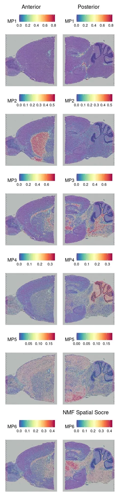
ggsave('./result/spatial_module_heatmap.pdf',p7)
## Saving 4 x 20 in image
相较于PCA等方法，NMF避免了负值加载，更适合非负计数数据，且天然促进稀疏性，提取的因子解释性更强。除了NMF外，也有很多其他方法来获取空间共表达模块的方法
三、参考
GeneNMF: fast, sensitive and accurate discovery of recurrent gene programs in multi-sample single-cell omics data
四、资料领取
一切不给测试文件和分析环境版本的教程都是耍流氓，本推送的代码和测试文件可以在以下链接中下载：文件大小约631.49MB
链接: https://pan.baidu.com/s/11KViYv3ERYa8WbzQqBGdIQ
提取码：pgg7

欢迎致谢
如果以上内容对你有帮助，欢迎在文章的Acknowledgement中加上这一段，联系客服微信可以发放奖励：
Since Biomamba and his wechat public account team produce bioinformatics tutorials and share code with annotation, we thank Biomamba for their guidance in bioinformatics and data analysis for the current study.
欢迎在发文/毕业时向我们分享你的喜悦~
已致谢文章
鼻咽癌的Bulk RNA-Seq与scRNA-Seq联合分析
13分+文章利用scRNA-Seq揭示地铁细颗粒物引起肺部炎症的分子机制
IF14.3| scRNA-seq+脂质组多组学分析揭示宫内生长受限导致肝损伤的性别差异银屑病和脂肪肝病中共同病理和免疫特征 《Advanced Science》新型Arf1抑制剂促进癌症干细胞衰老并增强抗肿瘤免疫
机器学习+生信多组学联合构建牙周炎"线粒体功能障碍与免疫微环境"关联网络
bulk+scRNA-seq挖掘BCL2-MAPK14-TXN氧化应激诊断模型，鉴定脓毒症中氧化应激关键基因
向下滑动查看更多
欢迎大家致谢~


如何联系我们
 留一个领取资料、开箱即用的单细胞分析镜像的微信号[Biomamba_zhushou]，方便各位随时交流。同时我们也构建了交流群矩阵，欢迎大家入群讨论。
大家可以阅读完这几篇之后添加给生信入门初学者的小贴士
没有检索，就没有发言权
留一个领取资料、开箱即用的单细胞分析镜像的微信号[Biomamba_zhushou]，方便各位随时交流。同时我们也构建了交流群矩阵，欢迎大家入群讨论。
大家可以阅读完这几篇之后添加给生信入门初学者的小贴士
没有检索，就没有发言权
已有生信基地联系方式的同学无需重复添加

 您点的每个赞和在看，我都认真当成了喜欢
您点的每个赞和在看，我都认真当成了喜欢